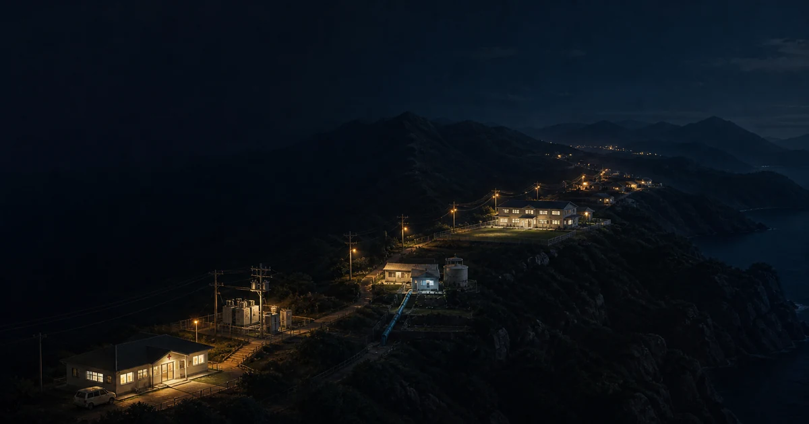
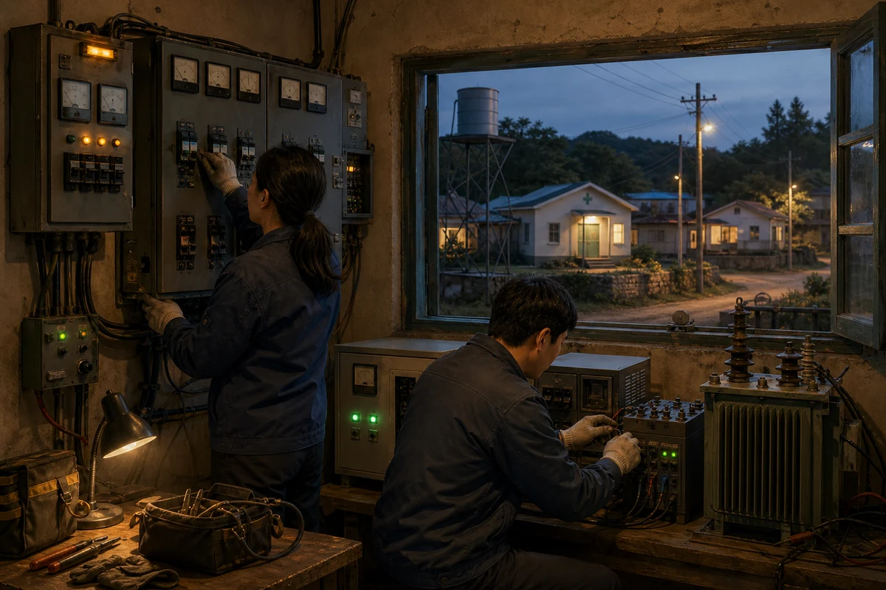

북한 주민의 생활을 먼저 밝히는 전력망은 한국에 차세대 전력망을 설계하고 운영하는 능력을 남길 수 있다. 두 성과가 함께 커질 때 전력 지원은 AI 시대의 한반도 전략이 된다.
작성·편집: HPMPLab의견 글
빛의 경계가 보여주는 것
한반도의 밤을 찍은 위성사진에서 북한은 평양과 몇몇 지역을 제외하면 짙은 어둠에 잠겨 있다. 남쪽의 도시 불빛이 군사분계선 앞에서 갑자기 끊기는 장면은 오랫동안 분단을 설명하는 가장 선명한 사진이었다.
밤의 위성사진만으로 모든 가정의 전력 이용을 정확히 알 수는 없다. 그래도 NASA가 2024년에 공개한 사진에서 국경을 사이에 두고 빛의 밀도가 급격히 달라지는 모습은 북한의 전력망이 주민의 생활과 생산을 충분히 떠받치지 못한다는 현실을 압축해서 보여 준다.

2025년 발전용량8.38GW
한국은행 추계 · 838만kW
2025년 발전량25.1TWh
한국은행 추계 · 251억kWh
수력발전 설비68.4%
심각한 노후 상태 추정
화력발전 설비84.8%
심각한 노후 상태 추정
한국은행의 2025년 추계에서 북한의 발전용량은 8.38GW, 발전량은 25.1TWh다. 설비 규모에 비해 실제로 생산된 전력이 적다. 에너지경제연구원은 수력 설비의 68.4%, 화력 설비의 84.8%가 즉각적인 교체나 성능 개선이 필요한 심각한 노후 상태라고 추정했다.
이 어둠을 한국의 투자 기회로 먼저 읽어서는 안 된다. 출발점은 북한 주민이 매일 쓸 전기를 늘리는 일이다. 다만 그 일을 제대로 해내는 과정에서 한국은 분산전원과 저장장치, 전력전자와 AI 운영을 하나의 체계로 묶는 능력을 얻을 수 있다. 북한의 생활 기반과 한국의 산업 역량이 같은 사업 안에서 함께 커지는 길이다.
첫 문은 민생 전력에서 열린다
현재 제재 아래에서 상업용 발전소를 짓고 남북 합작사업을 시작할 수는 없다. 유엔 안전보장이사회 1718위원회는 북한 주민을 위한 인도주의 사업에 필요한 물품과 서비스의 반입을 심사해 면제할 수 있지만, 승인 품목과 수량, 운송 일정을 구체적으로 적어야 한다. 유엔의 승인을 받아도 관련 국가의 국내 허가 절차는 따로 거쳐야 한다.
그래서 첫 사업에서는 발전량보다 전력의 용도가 먼저 분명해야 한다. 병원과 상수도, 식품 냉장시설처럼 전기가 끊기면 주민의 생명과 생활이 곧바로 흔들리는 곳을 고르고, 장비의 반입·설치·사용처·정비 이력을 외부가 확인할 수 있어야 한다. 자금은 국제기구나 제3의 관리기관을 거치고, 대금은 물건을 보냈다는 사실이 아니라 실제 가동률과 주민에게 공급된 전력량에 따라 지급하는 편이 맞다.
유엔개발계획의 Solar for Health는 2017년부터 15개국의 보건시설과 저장시설 약 1,000곳에 전력설비를 지원했다. 북한에 그대로 옮길 수 있는 사업은 아니지만, 병원을 중심으로 표준 장비와 현지 유지보수를 묶는 방식은 중요한 선례다. 국제사회의 문을 여는 것은 거대한 약속이 아니라 작고 확인할 수 있는 민생 성과다.
첫 전기는 체제의 상징이 아니라 병원의 냉장고와 마을의 물 펌프를 돌려야 한다.
한 기의 발전소가 아닌 100개의 작동하는 전력 섬
첫 목표를 거대한 발전소 한 기가 아니라 지역 거점 100곳으로 잡을 수 있다. 병원과 상수도 시설을 중심으로 노후 수력의 개보수, 지역 여건에 맞는 소규모 발전설비, 저장장치와 배전선을 묶는다. 기존 전국망이 불안정해도 필수 시설은 멈추지 않는 전력 섬을 만드는 방식이다.
100은 완공식의 숫자가 아니라 사업을 작게 나누는 원칙이다. 한 곳에서 문제가 생겨도 전체가 멈추지 않고, 지역마다 다른 수요와 지형에 맞춰 설계를 바꿀 수 있다. 실제 가동률과 정전 시간, 전력 사용처도 거점별로 확인하기 쉽다. 검증된 전력 섬끼리 연결하면 지역망이 되고, 지역망이 이어진 뒤에야 전국망을 논의할 수 있다.
작게 켜고, 확인하고, 연결한다
100개의 전력 섬이 하나의 전력망이 되는 순서
필수 시설의 독립 전력부터 시작해 검증된 거점만 지역망과 전국망으로 잇는다.
01
필수 시설부터 켠다
병원 · 상수도 · 냉장시설
지역의 수요끊기면 생명과 생활이 흔들리는 곳
발전 · 저장 · 배전→
독립 전력 섬전국망이 흔들려도 필수 공급 유지
02
100개 거점을 검증한다
작동 기록이 다음 투자의 조건
거점별 계량발전량 · 정전 시간 · 사용처
가동 성과 확인→
지역망 연결서로 전력을 보완하는 가까운 거점
03
공통 규칙으로 넓힌다
표준 · 보호 · 정비 체계 통합
여러 지역망고장이 번지지 않게 나눈 계통
공개 표준 · 계통 보호→
전국 전력망검증된 만큼 단계적으로 확장
확장 조건주민 우선 공급과 외부 검증이 확인된 만큼만 다음 단계의 자금과 설비를 투입한다.
100개의 전력 섬에서 지역망과 전국망으로.
AI는 전기를 쓰기 전에 전력망을 운영해야 한다
이 구상에서 AI는 처음부터 전기를 먹는 고객이 아니다. 필수 시설의 전력이 끊기지 않도록 배분하는 운영자에 가깝다. 발전량과 지역 수요를 예측하고, 저장장치의 충·방전 시점을 조정하며, 고장 가능성이 높은 변압기와 선로를 먼저 찾아낼 수 있다. 점검 인력이 부족한 곳에서는 어느 설비를 먼저 보고 어떤 부품을 보낼지 정하는 데도 쓸 수 있다.
물론 알고리즘이 낡은 전선을 새것으로 바꾸지는 못한다. 계량기와 센서, 표준화된 설비, 현장 기술자와 부품 창고가 먼저 있어야 한다. AI의 가치는 이 기반 위에서 정전 시간을 줄이고 정비의 순서를 더 정확하게 만드는 데 있다. 거대한 모델보다 고장 난 변압기의 위치를 제대로 알려 주는 작은 모델이 먼저 필요하다.

지역 전력망 운영과 정비.
한국에 남겨야 할 것은 운영 능력이다
한국이 얻어야 할 핵심 자산은 북한에서 가져온 전력이 아니다. 낡고 취약한 전력망에 분산전원과 저장장치를 연결하고, 제한된 전력을 필수 시설에 우선 배분하며, AI로 수요와 고장을 예측하는 통합 운영 능력이다.
이 능력은 북한에서만 쓰이지 않는다. 재난으로 전력망이 끊긴 지역, 섬과 산간 지역, 노후 계통을 현대화해야 하는 국가에서도 필요하다. 한국 기업은 발전기나 변압기 한 품목을 파는 데서 그치지 않고 설계·시공·운영·정비를 한 묶음으로 수출할 수 있다. 전력반도체, 배터리, 계통 보호, 로봇 점검과 운영 AI가 실제 현장에서 함께 작동한 기록도 쌓인다.
한 사업, 두 개의 성과
생활 기반과 산업 역량이 함께 커져야 한다
북한 주민과 지역사회
안정적인 민생 전력
병원·상수도·냉장시설·학교·생산시설의 정전 시간이 줄고, 현지에서 설비를 고칠 인력이 자란다.
한국의 산업 생태계
전력망 통합 운영 능력
발전·저장·전력전자·AI 예측·현장 정비를 묶어 취약한 전력망을 되살린 실적과 표준을 쌓는다.
계약의 기준한국 기업의 보상은 북한 지역의 정전 감소와 현지 필수 시설의 실제 가동률에 연동돼야 한다.
민생 전력과 산업 역량의 동행.
이 계약은 설치만 하고 떠나는 일회성 원조를, 오래 작동시킬수록 수익이 커지는 유지관리 사업으로 바꾼다.
데이터센터는 가장 늦게 들어오는 고객이어야 한다
국제에너지기구는 AI 중심 하이퍼스케일 데이터센터 한 곳의 용량이 100MW 이상이며, 연간 전력 사용량이 약 10만 가구와 맞먹을 수 있다고 설명한다. 이런 시설을 전력 복구의 출발점에 놓으면 주민에게 돌아갈 전기를 데이터센터가 먼저 가져가는 셈이다.
초기 전력은 병원과 상수도, 식품 냉장시설, 학교와 현지 생산시설에 먼저 배분해야 한다. 대형 연산시설은 필수 시설의 전력 공급과 지역망이 안정된 뒤에야 검토할 수 있다. 그때도 해당 시설 때문에 필요한 발전설비와 저장장치, 변전소와 송전망 보강비는 그 시설을 쓰는 기업이 부담해야 한다. 계통이 위태로울 때 연산 부하를 줄이는 계약도 필요하다.
지금 당장 발전설비를 반입할 수 없다고 준비까지 멈출 이유는 없다. 정치적 합의가 생긴 뒤에 실태조사와 표준, 계약을 처음부터 만들면 실행할 수 있는 시간을 허비한다. 한국은 공사보다 먼저 설계·계약·사람의 세 축을 준비할 수 있다.
설계100개 거점 표준안
병원·상수도 중심의 전력 섬을 지형과 수요별로 나누고, 계량·보호·부품 규격을 미리 설계한다.
계약검증 뒤 집행되는 자금
장비 반입과 최종 사용처, 현장 접근, 정전 감소를 확인한 뒤 다음 자금이 풀리는 계약을 만든다.
사람공동 운영과 정비 교육
남북이 함께 쓸 공용 정비 매뉴얼과 디지털 훈련 환경을 만들고, 현지 기술자 양성 과정을 준비한다.
여기에 유엔 제재 면제 신청에 필요한 품목 목록과 추적 절차, 제3자 검증 방식, 국제 공여기관이 사용할 조건부 지급 계약서를 표준 문서로 만들어 둘 수 있다. 국내에서는 노후 수력 개보수와 마이크로그리드, 배전망 운영 AI를 묶은 실증을 먼저 해 볼 수 있다. 북한 현장에 적용하기 전에 한국의 섬과 산간, 재난 대응 현장에서 설계의 허점을 찾는 것이다.
과거 KEDO의 두 기 1,000MW 경수로 사업은 일부 토목공사가 진행된 뒤 2006년 종료됐다. 정치적 합의와 대규모 자금, 단일 현장에 사업 전체를 걸면 한 고리가 끊길 때 전부가 멈춘다. 다음 사업은 거점마다 독립적으로 가동하고, 중단돼도 주민에게 전력과 정비 능력이 남도록 나눠야 한다.
마지막까지 꺼지지 않아야 할 불빛
이 구상의 성패는 북한에서 만든 전기를 남쪽으로 옮기는 데 달려 있지 않다. 북한 주민이 매일 쓰는 전력을 안정시키는 과정에서 한국이 취약한 전력망을 복구하고, 작은 전력망을 연결하며, AI로 운영하는 능력을 갖추는 데 달려 있다.
시작은 병원 한 곳과 물 펌프 한 대일 수 있다. 다음에는 냉장시설과 학교, 작업장의 불이 켜질 것이다. 그렇게 확인된 전력 섬이 하나씩 이어지면 북한에는 생활과 생산의 기반이 생기고, 한국에는 AI 시대의 전력 인프라를 설계하고 운영하는 산업 역량이 쌓인다. 전력망이 평화를 보장하지는 않는다. 그러나 함께 지켜야 할 일상을 매일 늘릴 수는 있다.
한반도의 남은 어둠을 밝힐 등대는 거대한 발전소 한 기가 아니다. 주민의 삶을 먼저 밝히고, 작동하는 만큼 신뢰를 쌓으며, 다음 불빛까지 길을 잇는 전력망이다.